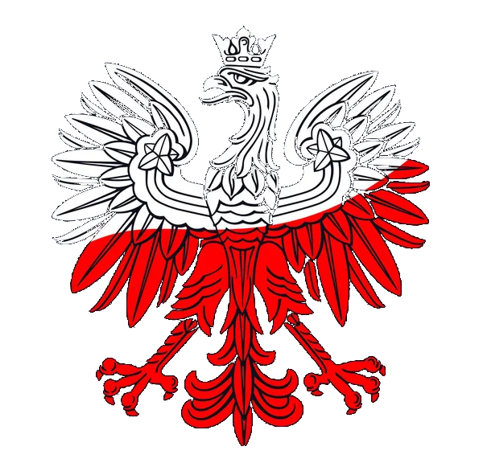

11 listopada - Święto Niepodległości
Narodowe Święto Niepodległości – święto państwowe w Polsce obchodzone corocznie 11 listopada dla upamiętnienia odzyskania niepodległości przez Polskę w 1918, po 123 latach zaborów (1795–1918). Święto zostało ustanowione ustawą z dnia 23 kwietnia 1937, zniesione ustawą Krajowej Rady Narodowej 22 lipca 1945, przywrócono je ustawą w okresie transformacji systemowej w 1989. Jest dniem wolnym od pracy.
Odzyskiwanie przez Polskę niepodległości było procesem stopniowym. Wybór 11 listopada uzasadnić można zbiegiem wydarzeń w Polsce z zakończeniem I wojny światowej dzięki zawarciu rozejmu w Compiègne 11 listopada 1918, pieczętującego ostateczną klęskę Niemiec. Dzień wcześniej przybył do Warszawy Józef Piłsudski.
